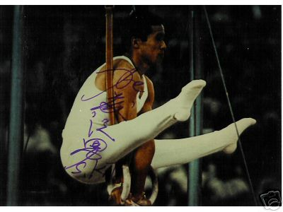

Sawao Kato (JPN)
1968 and 1972 Olympic AA
Champion
1972 and 1976 Olympic PB Champion

Medal Total
Olympic Games: 8
Gold, 3 Silver
World Cup: 1 Bronze
Sawao was born on October 11, 1946 in Niigata Prefecture. He attended Kuiku University. He's the most successful Japanese olympian. In 1999, Kato was named one of the 25 best athletes of the century by the AIPS. He was inducted into the International Gymnastics Hall of Fame in 2001.
Competition Results
1964
JPN-HUN Dual Meet: 1st Team, 5th AA
1965
Europe-Japan Dual Meet (Essen): 1st Team, 4th AA
Europe-Japan Dual Meet (Lugano): 1st Team, 2nd AA
1967
FRG-JPN Dual Meet: 1st Team, 2nd AA
Pre-Olympics: 10th AA
University Games: 3rd AA
1968
Olympic Games: 1st Team, 1st AA, 1st FX, 3rd R
1970
Chunichi Cup: 4th AA
NHK Cup: 5th AA
1971
Chunichi Cup: 2nd AA
JPN-USSR Dual Meet: 1st Team, 1st AA, 1st R, 1st HB, 2nd PH, 2nd PB, 3rd FX, 3rd V
1972
Olympic Games: 1st Team, 1st AA, 1st PB, 2nd
PH, 2nd HB, 4th R, 4th V, 6th FX
1973
Japanese Championships: 3rd AA
1976
NHK Cup: 5th AA
Olympic Games: 1st Team, 2nd AA, 1st PB, 5th FX,
5th PH, 6th R
1977
Wereld Turn Top: 2nd AA, 1st PB, 1st HB, 2nd FX, 3rd PH
World Cup: 4th AA, 3rd PB, 4th FX, 6th PH, 8th V, 8th HB
This page was created on December
23, 2004 and was last updated on September 1, 2020.
© Gymn Forum